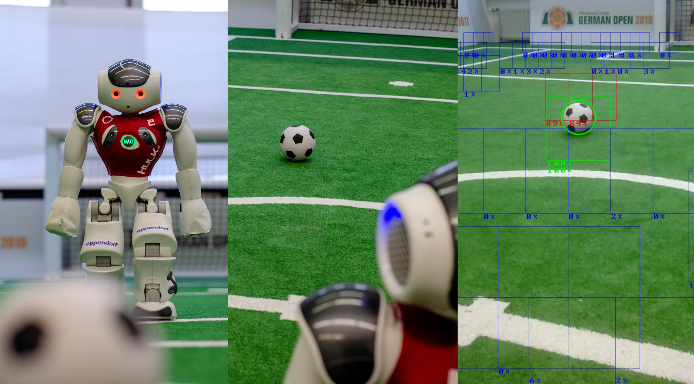
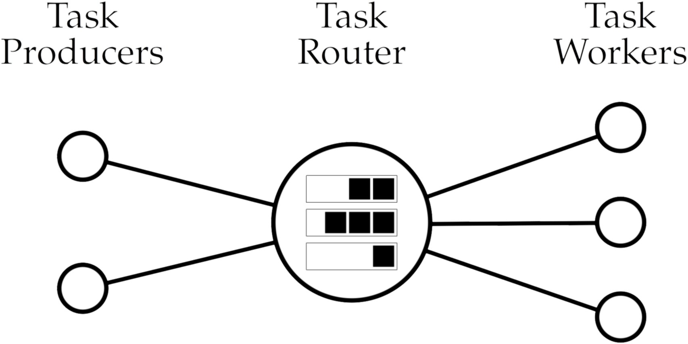
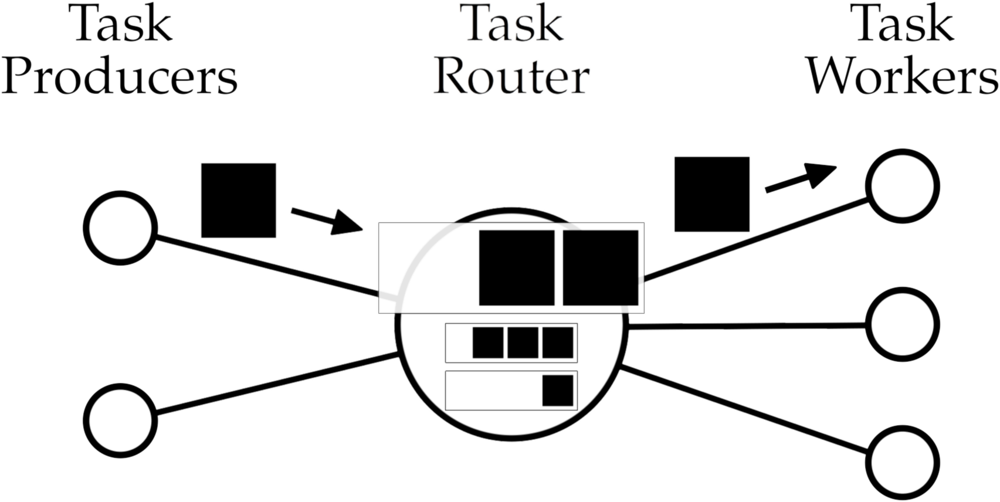
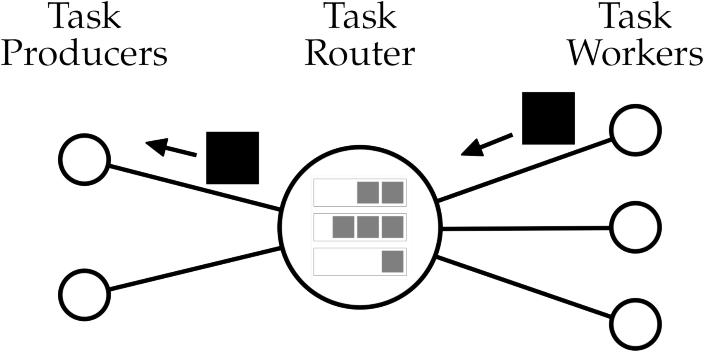
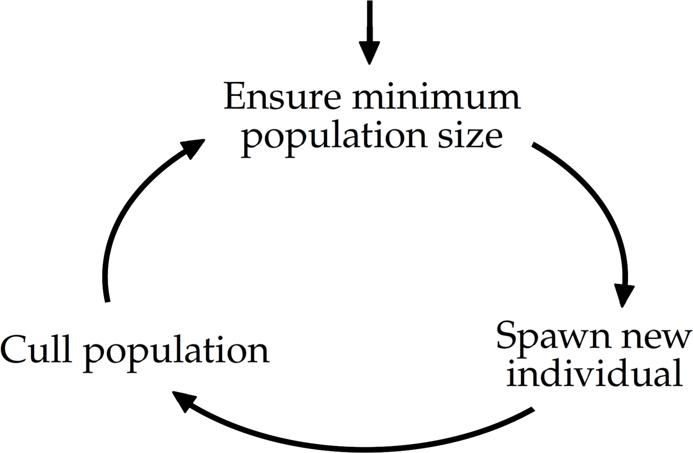
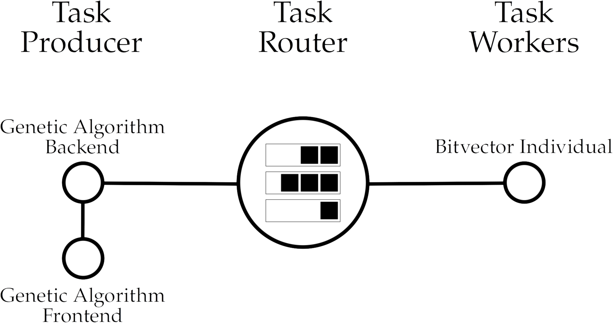
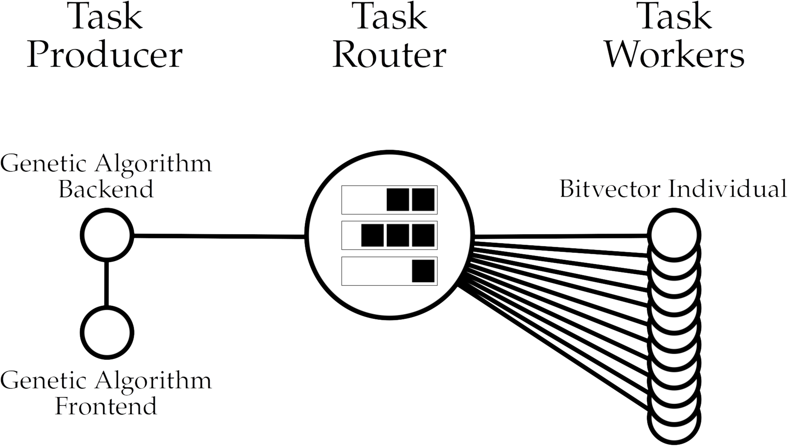
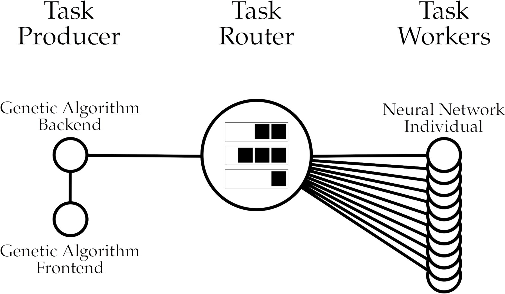

# Distributed Genetic Neural Network Architecture Search at HULKs ### MLE @ TUHH Pascal Gleske, Konrad Nölle, Hendrik Sieck Note: # MLE Welcome to our presentation, we are Pascal Gleske, Konrad Nölle, and Hendrik Sieck from the student robot soccer team HULKs. In our free time we are developing software at HULKs for the robots to enable them to play soccer. Today, we want to talk about our approach of using a genetic algorithm for searching architectures of artificial neural networks. # vRoHOW Welcome to our presentation, we are Pascal Gleske, Konrad Nölle, and Hendrik Sieck from team HULKs. Today, we want to talk about our approach of using a genetic algorithm for searching architectures of artificial neural networks.
# Outline - Introduction - Motivation - Requirements - Related Work - Distributed Task Execution - Genetic Algorithm - Live Demonstration - Conclusions - Outlook Note: What it says
# Introduction  Note: - TODO: Image, 3 column image # MLE As I said before, at HULKs we are writing software for small robots. They are about half a meter tall, as you can see on the left. Making them autonomously play soccer in a team against another team at a competition involves complex software including computer vision, game strategy, robot motion, and many other domains. Today, we want to focus in the computer vision domain. One of the goals is to let the robot see its environment. For example for playing soccer, it is important to know where the ball is on the field. We want to look deeper into this topic: detecting balls with computer cameras. In the middle, you can see a robot looking at the ball. After our computer vision algorithms analyzed such an image, a position of the ball is generated. At HULKs we are using a multi-stage pipeline to efficiently detect balls in camera images, combining conventional image processing and multiple artificial neural networks. # vRoHOW Today, we want to focus in the computer vision domain. One of the goals is to let the robot see its environment. For example for playing soccer, it is important to know where the ball is on the field. We want to look deeper into this topic: detecting balls with computer cameras. In the middle, you can see a robot looking at the ball. After our computer vision algorithms analyzed such an image, a position of the ball is generated. At HULKs we are using a multi-stage pipeline to efficiently detect balls in camera images, combining conventional image processing and multiple artificial neural networks. - soccer robots - balls, playing soccer - software, neural networks, ball detection
# Motivation - Pre-trained neural networks too complex - Need specialized neural networks - Requires neural network architecture search - Various search algorithms exist Note: Current approaches in computer vision often use larger pre-trained convolutional neural networks. These networks are also used for detecting multiple object classes at once. When trying to deploy such networks on our robots, they cannot be used due to limited hardware performance. For reliably detecting balls, we need to analyze camera images in native resolution 60 times per second. This is not feasible with such pre-trained networks without trade-offs. Our hardware constrained us to smaller neural networks using only interesting portions of the image as input. By testing our first prototypes, we realized these networks need to be optimized for performance, to run them thousands of times per second. Because of our limited knowledge at that time, we decided to automatically search for an architecture and corresponding hyperparameters, which is the topic of this talk. Architecture and hyperparameter search can be done with multiple strategies. Often one can separate problem domains from search algorithms, by applying standard suggestion algorithms and evaluating suggestions according to the domain. - native resolution for long distance robustness - 60 FPS for motion robustness - for MLE: mention SPL standard hardware - low performance hardware
# Requirements - Horizontal and vertical scalability - Selective execution for heterogeneous resources - Algorithm abstraction - Suggestion abstraction - Evaluation code separation - Inference library compatibility Note: Trying candidate neural networks can be done in parallel to utilize all available resources efficiently. We therefore require search frameworks that are able to scale horizontally and vertically. At HULKs we have some heterogenous hardware resources available for the architecture search. Scaling efficiently on this hardware demands solutions that need to coordinate execution of experiments on the hardware. We also want to constrain execution to parts of our resources. For testing different search algorithms we need to be able to swap different algorithms without much development overhead. Possible algorithms are for example genetic algorithms, Monte-Carlo tree search, or particle swarm optimizers. The same argument applies to swapping out experiments and problem domains. For example neural networks, controllers, or communication networks. In our current problem domain of searching an architecture for neural networks, we need to evaluate the network's performance. The search algorithms often only require an evaluation metric to operate. We are using Tensorflow for our evaluation which is a complex dependency that often breaks because of version incompatibilies. Therefore evaluation code should be separated from algorithm code. For efficient inference on our robots, we are using a specialized library that is not fully compatible with Tensorflow. The neural network candidates need to be tested for correct execution with the inference library. Different solution suggestion algorithms exist, but we decided to use a genetic algorthm for architecture and hyperparameter search. - why we decided to use genetic algorithm - relatively simple to implement (TODO: ?) - dimensionality of search space (TODO: ?) - suggestion = individual - suggestion & evaluation - CompiledNN
# Related work Use of existing frameworks infeasible because of: - Missing parallelism, weak execution constraints - Lack of abstractions, no code separation - Ecosystem lock-in - Impractical inference library validation - Unmaintained projects - Unnecessary complexity Note: First, we considered many existing task execution frameworks like Ray or Scoop and genetic frameworks like DEAP or GAFT. However, none of them met all of our requirements. Some genetic algorithm implementations lack parallelism and therefore do not scale well. Furthermore parallel execution libraries sometimes do not support constrained execution for our heterogeneous hardware. Most genetic libraries tightly couple the algorithm with evaluation. Often, execution frameworks share dependencies between task producers and workers which violates our code separation requirement. Implementations of genetic algorithms and task execution may constrain the choice of programming languages and third-party libraries. Ensuring inference library compatibility is difficult in some frameworks and may need to be performed separately outside of the task execution library. For obvious reasons, we also don't want to rely on abandoned and unmaintained projects. Modelling our use case with existing frameworks often leads to unnecessary complexity. Because the existing frameworks do not meet our requirements and are therefore infeasible for our use case, we decided to develop our own solution. # Genetic Frameworks https://www.kaggle.com/getting-started/112297 - https://pypi.org/project/geneticalgorithm/: simple arguments, no concurrency - https://github.com/DEAP/deap: tightly coupled algorithm and evaluation, no control where code is executed, no imperative style, over-engineered/too-complex types, not asyncio, round-based, no web interface - https://github.com/PytLab/gaft: learning project, last commit 2018, chinese: https://github.com/PytLab/gaft/issues/52, parallelization based on MPI which does not separate code?, individuals cannot define their operations (bad individual abstraction), no web interface, round-based - https://github.com/remiomosowon/pyeasyga: works on data, single-core/no parallelism - Pyvolution: Python 2.7 only - pySTEP: Python 2.6 only, last release 6 years ago - ga2: "Documentation will be done as soon as a stable stage is reached", "which I hope will be soon !" - https://github.com/msparapa/dga: all individuals are represented as bit array - https://github.com/skoblov-lab/genetic: last commit 2017, "Example 2: todo" - https://github.com/lfzark/pygalib: last commit 2015, 7 commits in total # Distributed Execution Distributed Tensorflow (and other ML library distributed processing implementations): - library lock-in - no evaluation code seperation - no distributed inference library checking Ray(-Tune): - No evaluation code seperation - selective execution, but not multi-type (according to white-paper). May possibly be modeled with custom resources. - python only Scoop: - No evaluation code seperation - python only Apache Helix Task Framework: - java based, no c++ bindings Consolidated Arguments: - Bad scaling - No code seperation - Library/Language lock-in - Can't do inference checking - Derelict / unmaintained - Lack of abstractions - Insufficiently selective execution - Bloated/overly complex
# Our Approach
<!-- 1min --> # Distributed Task Execution Framework  Note: Now, we want to present to you our distributed task execution framework. It enables the execution of abstract computation tasks in a pool of connected workers. The framework consists of three component types: On the left, one or more task producers, in the middle, the task router and on the right, one or more task workers. The router is the central component that receives tasks and coordinates the execution to the workers. Task producers generate new tasks and wait for their result. Task workers request tasks for execution at the router and send results back to it. The architecture allows us to dynamically add and remove producers as well as workers while the system is running. Communication happens over HTTP where the router provides a server and both workers and producers act as clients. - Different task types - Different producers
<!-- 1.5min --> # Task Dataflow <div class="column-box"> <div class="left-column">  </div> <ul class="right-column"> <li>Task producers generate</li> <li>Task router schedules</li> <li>Task workers execute</li> </ul> </div> Note: When a task producer wants to execute a task, it is sent to the router. Tasks consist of a type and a payload. The router receives tasks and appends them to the queue corresponding to the task type. When a worker is idle, it requests a new task of one of its supported types from the router. The router tries to deliver a task from one of the requested queues to the worker. Once it finds a task, the task is dequeued and marked as reserved to prevent another execution. - Task producers generate - pushes task and requests result - Task router schedules - queues by type - Task workers execute - fetches from router - of supported types
<!-- 0.5min --> # Result Dataflow <div class="column-box"> <div class="left-column">  </div> <ul class="right-column"> <li>Task workers generate</li> <li>Task router forwards</li> <li>Task producers receive</li> </ul> </div> Note: A worker receiving a task, executes it and generates the execution result. The executed code is selected via the received task type. Once the task is completed, the worker returns the result back to the router, which forwards it to the producer that queued the task. - Task workers generate - pushes to task router - Task router forwards - to original producer - fulfills task execution request - Task producers receive - passes result to caller
# Genetic Algorithm <div class="spacer"></div> - Algorithm operates on population - Population contain individuals - Individual is specified by genome and evaluates to fitness Note: As mentioned earlier, we decided to use a genetic algorithm for architecture search. A genetic algorithm simulates a genetic process found in nature. The genetic algorithm contains one or more populations. In the literature multiple populations are called islands or sub-populations. A population contains multiple individuals. Individuals are represented with a genome and can evaluate to a fitness metric. A genetic algorithm is a solution suggestion algorithm where operations on the populations and individuals generate new candidate solutions. In other words new genomes are generated by recombining or mutating other individual's genes and genomes. With these operations, genetic algorithms continuously evolve their populations and by preferring fitter individuals the algorithm improves the average fitness over time.
# Neural Network Individual <div class="spacer"></div> - Genome specifies architecture and hyperparameters - Genetic operations specific to neural networks - Evaluation with distributed task execution framework Note: Individuals of genetic algorithms must be specified in the problem domain. Since the genetic algorithm is an optimization algorithm that maximizes the average fitness over time, one needs to define the genome and fitness representation for a specific problem. For example, at HULKs, we want to use the genetic algorithm to find efficient neural networks for our ball detection. An individual in our problem domain represents a neural network architecture and hyperparameters which are encoded in the genome. The genome contains the precise specification of layers, kernel settings for convolutional layers, activation functions, learning rates, etc.. We have defined several operations on the genome for mutating it, for example adding or removing layers, or changing layer configurations or hyperparameters. The fitness of a neural network individual corresponds with the neural network metric on a test dataset. Since we want to execute the neural networks on our robot hardware, our fitness also includes penalties for computational complexity and inference library compatibility. The evaluation of a neural network is executed via the distributed task execution framework introduced before. When the algorithm generates a new individual with its genetic operations, the genome acts as the task payload. The worker calculates the neural network metric and sends the results back to the algorithm, where they are used in the fitness metric. - Layers, kernels, neurons, activation functions ... - Evaluation - fitness based on ANN metric and computational cost of inference
# Implementation Concept - Genetic algorithm according to literature - Discrete progression of generations - Fixed population size - Our approach - Non-discrete progression of generations - Fluctuating population size Note: In the literature, the genetic algorithm progresses discretely, by taking the entire population from one generation to the next. The population size remains fixed. To continue with the algorithm iteration, all individuals of the current generation need to finish their evaluation, which reduces the ability for parallel evaluation. In contrast, our approach creates a single new individual in each population per iteration step. But maintaining a fixed population size could lead to a lack of dynamic, because new less fit individuals would die instantly. We therefore allow for a fluctuating population size.
# Implementation <div class="column-box"> <div class="left-column2-bu2">  </div> <div class="right-column2-bu2"> <p>For each population, iterate:</p> <ul> <li>Ensure minimum population size</li> <li> Spawn new individual by <ul> <li>migration</li> <li>creating clone</li> <li>creating random</li> <li>cross-over</li> </ul> </li> <li>Cull population</li> </ul> </div> </div> Note: Let's dive deeper into the main loop of a single population in our algorithm. One iteration of our genetic algorithm executes three steps. First, it is ensured that a specified minimum number of individuals exist in the population. This means that at the beginning of the algorithm, new individuals are randomly generated. The next step is to execute a genetic operation to generate a new individual with one of four spawning strategies. We will look at these in a minute. The last step is to reduce the population if it got too large. The population size is allowed to oscillate within certain bounds. When a population is culled to a lower population size, individuals to be removed are selected by their fitness, s.t. less fit individuals die. To implement oscillation we shrink the population probabilistically below the maximum allowed size. - Ensure minimum population size - by spawning randoms - Spawn new individual by one of the operations - selection uniformly distributed - Culling - selection worst-first - probabilistic below max-pop-size
# Implementation - Migration from randomly chosen population - Clone existing individual with mutations - Randomly generated genes - Cross-over by selecting genes of parents with mutations  Note: For generating a new individual, one of four spawning strategies is chosen at random: When generating an individual by migration between populations, a random member is selected and cloned from a random population. The individual may be a clone of an existing individual of the population. In this strategy, the whole genome is copied and random mutations are applied. The third type is to generate a random individual. But for example, the generation of a random neural network is non-trivial since not all layer types and sizes are compatible with each other which would yield infeasible genomes. Therefore the individual types provide their own random generators. The last strategy to generate a new individual is by cross-over, which means, two parent individuals are selected from the population at random. The new genome is then constructed from genes of either of the parents. Afterwards, random mutations are applied. Neural nets as examples - Clone existing individual with mutations - Randomly generated genes - within valid bounds - Cross-over by selecting genes of parents with mutations - Migration from randomly chosen population
# User Interface <div class="spacer"></div> - Live configuration changes - Population overview - Detailed individual view Note: To allow interaction with and debugging of the genetic algorithm, we implemented a user interface accessible via a web browser. The user interface allows for adding and removing populations as well as live configuration changes. Furthermore, it shows the list of active populations with their metrics, for example the current population size or average fitness. The population overview also contains a history of the metrics. The detailed individual view shows in-depth information about an individual. The neural network architecture derived from the genome is visualized for an easy overview of its features. Within individuals one can navigate through the genealogy to show parents or children. Furthermore the detailed individual view shows the evaluation result with metrics and computational cost. - Live configuration changes - add/remove populations - Population overview - History - Hall of fame - Detailed individual view - Architecture visualization - Genealogy - Evaluation result
# Live-Demo Note: Thank you, Konrad, for the theoretical presentation of our approach. Now, we want to show you, that our approach also works in practice. For that, we have prepared a live demonstration for you.
# Live-Demo: Bitvector <div class="spacer"></div> One-Max-Problem as common example: - Genome represents vector of bits (each true/false) - Fitness is number of true bits - Goal: maximize fitness Note: The first individual we implemented was the bitvector individual. It solves the so called one-max-problem, which is a common example from the literature. It is also often used as an introductioral optimization problem for genetic algorithms. As mentioned before, an individual is defined by a genome and the fitness. Here, the genome is sequence of boolean bits and the fitness sums up number of true bits; the genetic algorithm optimizes for maximizing the fitness.
# Live-Demo: Bitvector  Note: <details> <summary><h1>Setup</h1></summary> - in `~/mle-2021/nao/tools/machine-learning` - `virtualenv --python $(which python3) venv` - `source venv/bin/activate` - `pip install --editable generic/distributed_task_execution_framework/producer/backend/genetic_algorithm/sliding/ && pip install --editable generic/distributed_task_execution_framework/producer/backend/genetic_individual/bitvector/ && pip install --editable generic/distributed_task_execution_framework/producer/backend/genetic_individual/string/ && pip install --editable generic/distributed_task_execution_framework/producer/backend/shared/ && pip install --editable generic/distributed_task_execution_framework/router/ && pip install --editable generic/distributed_task_execution_framework/worker/genetic_individual_bitvector/ && pip install --editable generic/distributed_task_execution_framework/worker/genetic_individual_string/ && pip install --editable generic/distributed_task_execution_framework/worker/worker/` - `ditef-router --port 8082` - `rm -Rf bitvector_state` - `ditef-producer-genetic-algorithm-sliding --port 8083 http://localhost:8082/ ditef_producer_genetic_individual_bitvector bitvector_state` - `cd generic/distributed_task_execution_framework/producer/frontend` and `yarn install` and `BROWSER=none PORT=3001 yarn start` - Only type, do not press enter: `ditef-worker http://localhost:8082/ ditef_worker_genetic_individual_bitvector` </details> # Live Here, we see the setup of the bitvector evaluation that we will show you in a minute. On the left, we have one task producer, consisting of a backend and frontend. The backend runs the genetic algorithm which generates tasks for the distributed task execution framework. The frontend serves our user interface via a web browser. In the middle, we have the task router, which is the central component of the whole demo setup. On the right, you can see one bitvector worker, it gets the bitvector genome, which is the sequence of bits, and calculates the sum or fitness and returns it back to the backend. Next, we will switch over to the user interface, where I will show you how a bitvector population and individuals are represented. At the moment the worker is not started yet, s.t. we can look at the user interface while the genetic algorithm is not running. Switch to web browser: http://134.28.57.202:3001 Say: Here, you can see the current list of populations. We didn't add any, so this list is currently empty. In the lower right corner, I can add a new population. Click on +-Button Say: As mentioned before, each population has its own configuration. For example, we can change the intended population size, probabalistic weights and individual settings. In the bottom, there is the `genome_size` which controls how large the bitvector is, which we want to optimize now. Let's add the population with these settings. Click Add-Button Say: Our new population is now shown in the list with some current metrics. Remember: We didn't start a worker yet and that's the reason why this population does not change currently. Let's investigate this population. Click on population Say: Within one population, we can observe some important metrics in more detail. At the top, there are two charts about the size and fitness over time. They are empty, because of the not started worker. At the bottom, we can see the list of members contained in this population. They are currently waiting to be evaluated but there is no worker at the moment. Therefore they didn't receive a fitness yet. Let's look at one individual. Click on individual Say: The individual page shows detailed information about one individual. At the top, we can see the genome. Here you can see the bitvector in action. Each red portion corresponds to a false bit, all the green ones to a true bit. The goal of this algorithm is to evolve the individuals over time so that this genome visualization gets more green. This corresponds to a maximum reachable fitness of 100, because our bitvector has this amount of bits. Currently this individual has no fitness and since it is a random generated individual, it does not have any parents. Let's go back to the population page. Go back in browser Say: I think, we are now ready to see the genetic algorithm in action. For that I will finally start the worker. I will do that off-screen, s.t. we can see the user interface all the time. Off-Screen: Switch to terminal `ditef-worker http://localhost:8082/ ditef_worker_genetic_individual_bitvector` Go back to browser Say: As you can see, the population slowly progresses and increases its fitness. Wait for some time, fitness = 100 Say: Let's look at one of the best individuals. Open one best individual Say: Here, you can see that this individual has converged to the optimal solution. It has a fitness of 100 because all boolean bits are evolved to true. At the bottom, you can now see that this individual got generated by a cross over/clone operation and that it served as parent for several children. ... Let's go back to the presentation. Off-Screen: Stop worker Switch to presentation
# Live-Demo: Bitvector  Note: We will first start a population with one worker and I will then connect more workers to the router. Hopefully, we can see a steep increase in the fitness plot. Let's see. Switch to terminal, kill worker In Rechenknecht tmux, run `cp __init__.py.slow __init__.py` Restart worker `ditef-worker http://localhost:8082/ ditef_worker_genetic_individual_bitvector` Switch to browser, create a population with maximum size 35 Say: We see on the top right a slow increase of the fitness. Let's start more workers. Switch to terminal, to 10-cell tab Start 10 workers `ditef-worker http://localhost:8082/ ditef_worker_genetic_individual_bitvector` Switch to browser Say: As you can see, the average fitness increases much more quickly. Starting more workers has an immediate effect on the speed of our genetic algorithm implementation. Go to population list, remove population
# Live-Demo: Neural Networks <div class="spacer"></div> - Genome represents architecture and hyperparameters - Fitness is accuracy on test dataset - Goal: maximize fitness 4-8 GPU worker, evolving for 2 weeks Note: We have another demo prepared for you. Now, that we have looked at our user interface and a very simple individual type, we are now looking at our main topic of this talk: Evolving neural networks with our genetic algorithm for our ball detection at HULKs. With this demo we want to show you, that our implementation is capable of coming up with good-performing and efficient neural networks. Because of our individual abstraction, we can simply swap out the bitvector individual with a neural network individual. Again, the question is, how is the genome and fitness defined. As mentioned before, we are representing the neural network architecture and hyperparameters as genome. The fitness is then simply the score on some test dataset. Similar to the bitvector example, we want to maximize the fitness. ... As training neural networks may take a long time, we started the genetic algorithm for this demonstration a few weeks ago. We have connected sometimes 4, sometimes 8 workers to it. The setup is very similar to the bitvector example.
# Live-Demo: Neural Networks  Note: The setup contains the four component types: a backend with an attached frontend, the router in the middle, and several task workers. Let's see that in action. Switch to browser tab, http://134.28.57.202:3000, start in population list Say: In total, within these weeks of training, our genetic algorithm proposed nearly (twenty-three thousand) 23000 individuals for evaluation. The neural network setup currently consists of a three populations training different kinds of neural networks for our ball detection at HULKs. In this demonstration, we want to focus on the "positioner" population. Open "positioner" population Say: We can see that the best members achieved a fitness of around zero dot nine tree which can be interpreted as nearly ninety-tree percent accuracy on a test dataset. In the list of members, you can see that this population has nearly converged since all members have nearly the same fitness, or in other words: the variance in the fitness is small. Scroll a little bit through the member list, show unevaluated individuals Say: Now let's look at one of the best individuals. Open best individual Say: At the top you can see the genome again. For this individual type we tried to profit from the web-based user interface which allows to display rich visualizations of the individuals. We are training a positioner neural network which gets an image as input and outputs the position of a potential ball on this image. The fitness of this neural network is zero dot nine tree. For the neural network individual we added a computational cost penalty to the fitness which allows us to make the algorithm prefer more efficient individuals. On the right, we are displaying the training progression over the training epochs. And below all that fancy stuff, we also have the genealogy of this individual again. The genealogy allows us for example to identify genetic operations that produced bad individuals or, in contrast, work well. So, it is a very convenient debugging and introspection tool. Let's go back to the presentation. Switch to presentation
<!-- ca. 2 minutes? --> # Video-Demo Note: `sudo play video` - for RoHOW: Live-Demo here - TODO: test stream setup for video - Terminals + UI
# \</Live-Demo\> Note: So much for the live demonstration. We have now shown you that our approach works in practice. ... What do we conclude from it?
# Conclusions <div class="spacer"></div> - Multiple workers - Multiple populations - TODO Note: - summary of video
# Conclusions <div class="spacer"></div> <ul> <li>Horizontal and vertical scalability</li> <li class="fragment">Population and individual level concurrency</li> <li class="fragment">Selective execution for heterogeneous resources</li> <li class="fragment">Algorithm abstraction</li> <li class="fragment">Suggestion abstraction</li> <li class="fragment">Evaluation code separation</li> <li class="fragment">Inference library compatibility</li> </ul> Note: The distributed task execution framework allows to scale the task execution horizontally and vertically by attaching additional task workers to the task router. We have seen this during the live demonstration where I started the bitvector worker at a later time while the other components of the architecture were already running. So, we are able to dynamically add and remove workers. NEXT: 2.: Population Within the algorithm, or task producer, the iteration loop may be executed multiple times in parallel to increase concurrency of the individual evaluation. You can think of executing multiple instances of the genetic algorithm on the same population members, so with shared data. NEXT: 3.: Selective The task workers request tasks from the router of a subset of supported types. This allows the workers to select which task types they want to execute. This feature can be used to distribute work selectively across the workers by configuring which types they should request from the router. The system is robust against network failures, simply resuming once the connection is re-established. NEXT: 4. + 5.: Algorithm + Suggestion The abstractions introduced by our implementation within one task producer allows to swap algorithms and individuals without overhead. This is achieved by introducing a common interface between algorithms and individuals. We have implemented this, s.t. the individuals provide methods for executing genetic operations which are then called by the algorithm. NEXT: 6.: Evaluation Code seperation in our framework allows us to run tasks with vastly different dependencies without requiring all nodes of our network to fulfill these dependencies. For example, only our neural network worker requires the Tensorflow dependency. NEXT: 7.: Inference The evaluation of the neural network individual concludes with checking whether the trained neural network performs as expected in the inference library used on the robots. With that we ensure compatibility with our robot platform. So, in conclusion, we can see that our approach fulfills all our requirements we presented in the beginning of this talk.
# Outlook <div class="spacer"></div> - Problem domains - Solution suggestion algorithms - Task worker platforms - ... Note: Finally, we would like to briefly cover possible future developments with or within our framework. We are planning to apply our genetic algorithm to other problem domains, such as robot motion, game state estimation, and robot role assignments. We might also implement different solution suggestion algorithms instead of a genetic algorithm, such as tree search or particle swarm optimizers. As we've seen in the demonstration, task workers can be executed in any environment, evaluating vastly different tasks. We therefore might also try to run task workers directly on the NAO robot, to evaluate for example walking parameters directly on the hardware.
# Thank you for listening Interested? Join us: https://hulks.de - Pascal Gleske \<pascal.gleske@tuhh.de> - Konrad Nölle \<konrad.noelle@tuhh.de> - Hendrik Sieck \<hendrik.sieck@tuhh.de> Note: With that, we would like to thank you for listening. Small advertisment: We are always looking for motivated students with an interest in robotics and software. The topics we presented in this talk are just a small portion of topics we are working on currently. If you are interested, get in touch with us. Contact informations are available on our website. You can also get in touch with us directly. Thank you. Possible Questions: - Does the audience have experience with genetic algorithms? - Other solution suggestion algorithms?